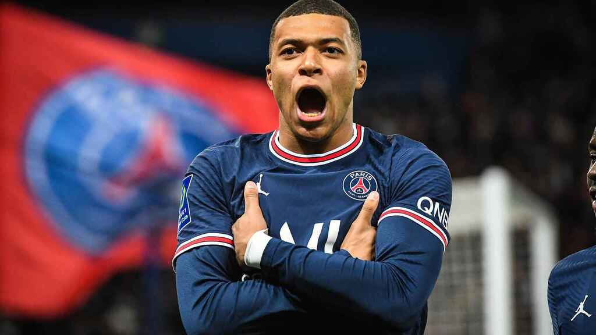
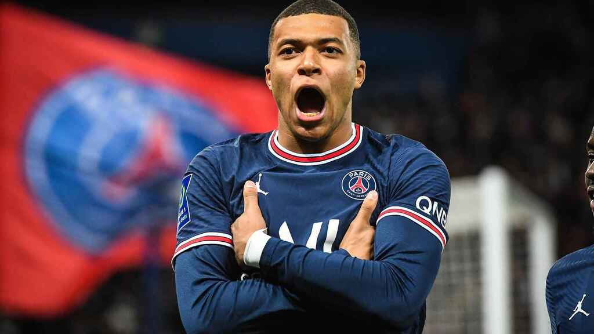
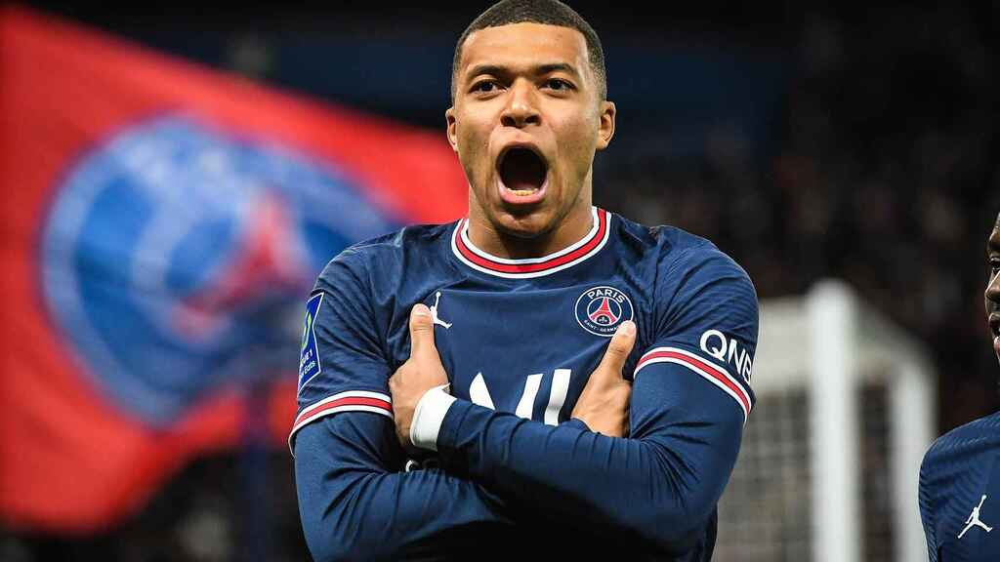

Moim Zdaniem najlepszym zawodnikiem jest Lewandowski i Mbappe
 

Bramkarze:
Bartłomiej Drągowski (Spezia Calcio)
Kamil Grabara (FC Kopenhaga) Radosław Majecki (Cercle Brugge) Łukasz Skorupski (Bologna FC) Wojciech Szczęsny (Juventus FC)Obrońcy:
Jan Bednarek (Aston Villa FC)
Bartosz Bereszyński (UC Sampdoria)
Paweł Bochniewicz (sc Heerenveen)
Matty Cash (Aston Villa FC)
Paweł Dawidowicz (Hellas Werona)
Kamil Glik (Benevento Calcio)
Robert Gumny (FC Augsburg)
Michał Helik (Huddersfield Town)
Artur Jędrzejczyk (Legia Warszawa)
Michał Karbownik (Fortuna Duesseldorf)
Tomasz Kędziora (Dynamo Kijów)
Jakub Kiwior (Spezia Calcio)
Patryk Kun (Raków Częstochowa)
Maik Nawrocki (Legia Warszawa)
Tymoteusz Puchacz (1. FC Union Berlin)
Arkadiusz Reca (Spezia Calcio)
Mateusz Wieteska (Clermont Foot 93)
Nicola Zalewski (AS Roma)
Pomocnicy:
Krystian Bielik (Birmingham City)
Patryk Dziczek (Piast Gliwice)
Przemysław Frankowski (RC Lens)
Jacek Góralski (VfL Bochum)
Kamil Grosicki (Pogoń Szczecin)
Kamil Jóźwiak (Charlotte FC)
Jakub Kamiński (VfL Wolfsburg)
Mateusz Klich (Leeds United)
Kacper Kozłowski (SBV Vitesse Arnhem)
Grzegorz Krychowiak (Al-Shabab Rijad)
Karol Linetty (Torino FC)
Mateusz Łęgowski (Pogoń Szczecin)
Jakub Piotrowski (Łudogorec Razgrad)
Michał Skóraś (Lech Poznań)
Damian Szymański (AEK FC)
Sebastian Szymański (Feyenoord Rotterdam)
Piotr Zieliński (SSC Napoli)
Szymon Żurkowski (ACF Fiorentina)
Napastnicy:
Adam Buksa (RC Lens)
Dawid Kownacki (Fortuna Duesseldorf)
Robert Lewandowski (FC Barcelona)
Arkadiusz Milik (Juventus FC)
Krzysztof Piątek (US Salernitana 1919)
Karol Świderski (Charlotte FC)


1. Ślady dyscypliny podobnej do piłki nożnej można znaleźć w starożytnych Chinach, a także w cywilizacjach prekolumbijskich. Majowie i Aztekowie budowali nawet specjalne trybuny dla osób, które chciały popatrzeć na widowisko.
2. Piłka nożna w formie, jaką znamy dzisiaj, zaczęła kształtować się w Anglii w XIX wieku. Dostrzeżono pozytywny wpływ gry na świeżym powietrzu dla zdrowia młodzieży.
3. The Football Association to jeden z najstarszych związków piłki nożnej na świecie. Został założony w 1863 roku.
4. FIFA, czyli Międzynarodowa Federacja Piłki Nożnej, powstała w 1904 roku w Paryżu. Jej siedzibą jest szwajcarski Zurych.
5. Pierwsi sędziowie podczas meczów piłkarskich pojawili się dopiero pod koniec XIX wieku. Wcześniej zakładano, że piłkarze są dżentelmenami, a na boisku nie dojdzie do żadnego oszustwa.
6. Bramkarze zawsze mają stroje w innych barwach niż reszta drużyny i jest to wybór w pełni uzasadniony. Sędziowie nie zawsze znają wszystkich zawodników, a podczas gdy nie powinni zastanawiać się, czy piłkarz dotknął ręką piłki czy też był to bramkarz.
7. Lew Yashin do dnia dzisiejszego uchodzi za najwybitniejszego bramkarza w historii. Zawodnik grał w reprezentacji Związku Radzieckiego i zwykle ubierał czarny stój, dlatego zyskał przydomek Czarna Pantera.
8. W dwudziestoleciu międzywojennym opatentowano pierwszą w historii piłkę bez sznurówek. Wynalazek ten zawdzięczamy Argentyńczykom Romano Polo, Antonio Tossolini oraz Juanowi Valbonesi.
9. Ostateczne wymiary boiska piłkarskiego zostały określone dopiero w 2008 roku. To właśnie wtedy zdecydowano, że boiska mają mieć 105 metrów długości i 68 metrów szerokości. Z kolei wszystkie bramki muszą mieć 732 cm długości i 244 cm wysokości.
10. Pierwsze mistrzostwa świata w piłce nożnej, zwane Mundialem, odbyły się w 1930 roku w Urugwaju. Zwyciężyła wówczas reprezentacja Urugwaju i od tamtego wydarzenia mistrzostwa odbywają się co cztery lata.